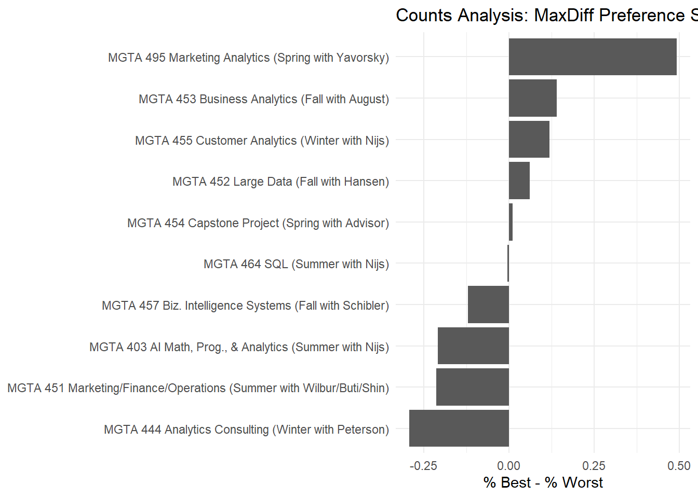
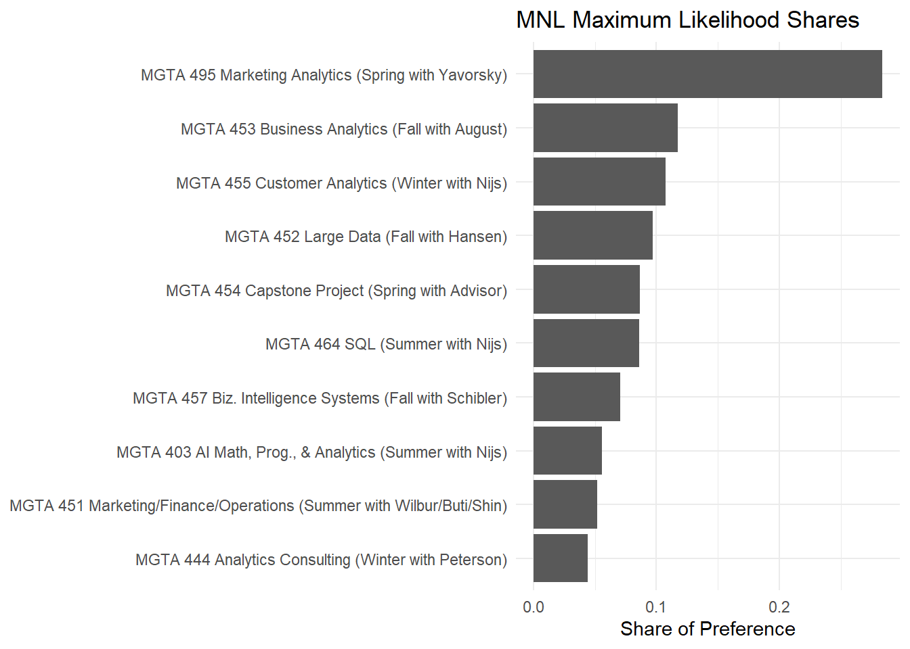
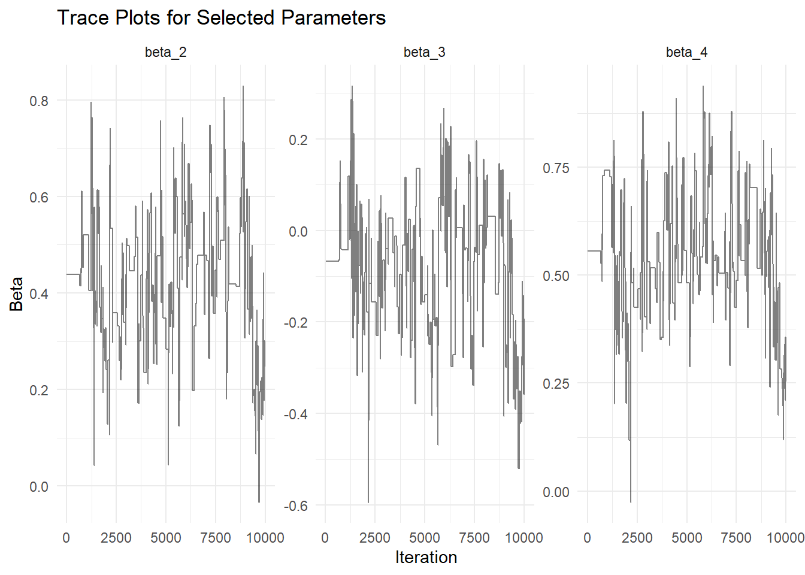
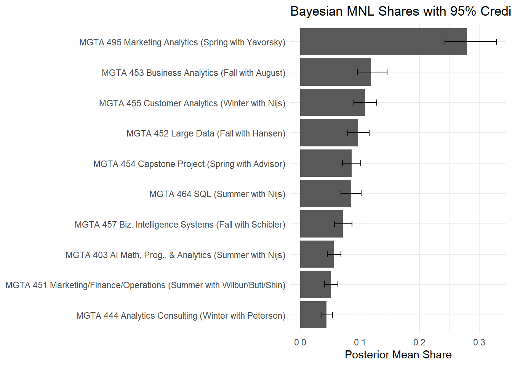
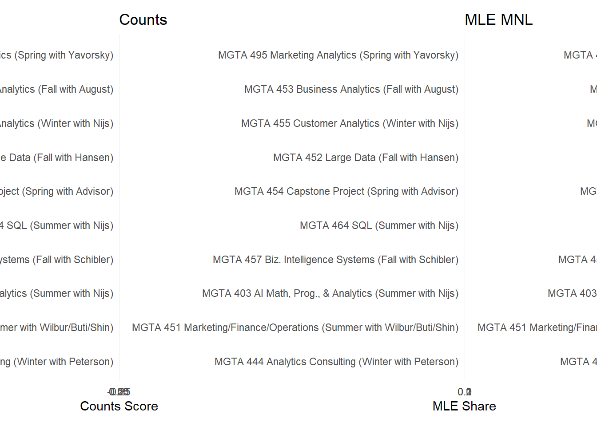

Code
library(readr)
library(dplyr)
library(tidyr)
library(purrr)
library(ggplot2)
library(knitr)
library(kableExtra)
library(patchwork)
set.seed(123)Counts, MLE, and Bayesian estimation of the MNL model
Wanxing Dai
May 28, 2026
MaxDiff, also called Best-Worst Scaling, is a survey method used to measure relative preferences. Instead of asking people to rate every item on a numeric scale, MaxDiff asks respondents to choose the most preferred and least preferred item from a small set. This is useful because people are often better at making trade-offs than assigning consistent numerical ratings.
In this assignment, the items are the 10 core MSBA classes at UCSD Rady. The goal is to estimate students’ relative preferences using three methods: a simple counts analysis, a multinomial logit model estimated by maximum likelihood, and the same MNL model estimated using Bayesian methods.
I expect the three methods to agree broadly on the highest- and lowest-ranked classes, while differing slightly in the middle rankings and in how they represent uncertainty.
New names:
• `` -> `...3`
• `` -> `...4`
• `` -> `...5`
• `` -> `...6`
• `` -> `...7`dat <- dat_raw |>
rename(
record_id = `Record ID`,
task = Task,
position = Position,
item = Item,
response = Response
)
labels <- labels_raw |>
select(item = `Item #`, item_label = Item)
task_check <- dat |>
group_by(record_id, task) |>
summarise(
n_rows = n(),
n_best = sum(response == 1),
n_worst = sum(response == -1),
has_item_11 = any(item == 11),
.groups = "drop"
)
valid_task_ids <- task_check |>
filter(
n_rows == 4,
n_best == 1,
n_worst == 1,
!has_item_11
) |>
select(record_id, task)
dat <- dat |>
semi_join(valid_task_ids, by = c("record_id", "task")) |>
left_join(labels, by = "item") |>
arrange(record_id, task, position)
item_map <- dat |>
distinct(item, item_label) |>
arrange(item) |>
mutate(item_id = row_number())
dat <- dat |>
left_join(item_map, by = c("item", "item_label"))
labels_model <- item_map |>
select(item_id, item, item_label)
K <- n_distinct(dat$item_id)
glimpse(dat)Rows: 2,720
Columns: 7
$ record_id <chr> "69fb85fbd66b452e6decf4f7", "69fb85fbd66b452e6decf4f7", "69…
$ task <dbl> 1, 1, 1, 1, 2, 2, 2, 2, 3, 3, 3, 3, 4, 4, 4, 4, 5, 5, 5, 5,…
$ position <dbl> 1, 2, 3, 4, 1, 2, 3, 4, 1, 2, 3, 4, 1, 2, 3, 4, 1, 2, 3, 4,…
$ item <dbl> 5, 7, 4, 1, 8, 3, 10, 9, 3, 5, 2, 6, 6, 4, 8, 7, 2, 9, 7, 1…
$ response <dbl> 0, 1, 0, -1, -1, 0, 1, 0, 0, 0, 1, -1, -1, 0, 0, 1, 1, 0, 0…
$ item_label <chr> "MGTA 453 Business Analytics (Fall with August)", "MGTA 455…
$ item_id <int> 5, 7, 4, 1, 8, 3, 10, 9, 3, 5, 2, 6, 6, 4, 8, 7, 2, 9, 7, 1…N <- n_distinct(dat$record_id)
T_per_person <- dat |>
distinct(record_id, task) |>
count(record_id) |>
pull(n) |>
unique()
J <- dat |>
count(record_id, task) |>
pull(n) |>
unique()
descriptives <- tibble(
"Number of respondents" = N,
"Tasks per respondent" = T_per_person[1],
"Items per task" = J[1],
"Total items" = K
)
kable(descriptives)| Number of respondents | Tasks per respondent | Items per task | Total items |
|---|---|---|---|
| 85 | 8 | 4 | 10 |
sanity <- dat |>
group_by(record_id, task) |>
summarise(
n_best = sum(response == 1),
n_worst = sum(response == -1),
n_neutral = sum(response == 0),
n_rows = n(),
valid = n_best == 1 & n_worst == 1 & n_neutral == n_rows - 2,
.groups = "drop"
)
sanity_summary <- sanity |>
summarise(
total_tasks = n(),
valid_tasks = sum(valid),
invalid_tasks = sum(!valid)
)
kable(sanity_summary)| total_tasks | valid_tasks | invalid_tasks |
|---|---|---|
| 680 | 680 | 0 |
| item_id | item | item_label | times_shown |
|---|---|---|---|
| 1 | 1 | MGTA 403 AI Math, Prog., & Analytics (Summer with Nijs) | 273 |
| 2 | 2 | MGTA 464 SQL (Summer with Nijs) | 274 |
| 3 | 3 | MGTA 451 Marketing/Finance/Operations (Summer with Wilbur/Buti/Shin) | 272 |
| 4 | 4 | MGTA 452 Large Data (Fall with Hansen) | 276 |
| 5 | 5 | MGTA 453 Business Analytics (Fall with August) | 270 |
| 6 | 6 | MGTA 444 Analytics Consulting (Winter with Peterson) | 267 |
| 7 | 7 | MGTA 455 Customer Analytics (Winter with Nijs) | 276 |
| 8 | 8 | MGTA 454 Capstone Project (Spring with Advisor) | 272 |
| 9 | 9 | MGTA 495 Marketing Analytics (Spring with Yavorsky) | 274 |
| 10 | 10 | MGTA 457 Biz. Intelligence Systems (Fall with Schibler) | 266 |
The raw file also contains additional two-row tasks involving item 11, which does not have a class label. Those rows are not part of the 4-item MaxDiff tasks, so I filter the data to keep only valid 4-item tasks with exactly one best choice and one worst choice.
The counts analysis is a simple descriptive method. For each class, I compute how often it was selected as best and how often it was selected as worst, relative to the number of times it appeared. The score is:
\[ \text{score}_j = \text{percent best}_j - \text{percent worst}_j \]
Higher scores indicate stronger preference.
counts <- dat |>
group_by(item_id, item, item_label) |>
summarise(
times_shown = n(),
times_best = sum(response == 1),
times_worst = sum(response == -1),
pct_best = times_best / times_shown,
pct_worst = times_worst / times_shown,
counts_score = pct_best - pct_worst,
.groups = "drop"
) |>
arrange(desc(counts_score)) |>
mutate(counts_rank = row_number())
kable(counts, digits = 3)| item_id | item | item_label | times_shown | times_best | times_worst | pct_best | pct_worst | counts_score | counts_rank |
|---|---|---|---|---|---|---|---|---|---|
| 9 | 9 | MGTA 495 Marketing Analytics (Spring with Yavorsky) | 274 | 147 | 12 | 0.536 | 0.044 | 0.493 | 1 |
| 5 | 5 | MGTA 453 Business Analytics (Fall with August) | 270 | 93 | 55 | 0.344 | 0.204 | 0.141 | 2 |
| 7 | 7 | MGTA 455 Customer Analytics (Winter with Nijs) | 276 | 104 | 71 | 0.377 | 0.257 | 0.120 | 3 |
| 4 | 4 | MGTA 452 Large Data (Fall with Hansen) | 276 | 77 | 60 | 0.279 | 0.217 | 0.062 | 4 |
| 8 | 8 | MGTA 454 Capstone Project (Spring with Advisor) | 272 | 72 | 69 | 0.265 | 0.254 | 0.011 | 5 |
| 2 | 2 | MGTA 464 SQL (Summer with Nijs) | 274 | 55 | 56 | 0.201 | 0.204 | -0.004 | 6 |
| 10 | 10 | MGTA 457 Biz. Intelligence Systems (Fall with Schibler) | 266 | 23 | 55 | 0.086 | 0.207 | -0.120 | 7 |
| 1 | 1 | MGTA 403 AI Math, Prog., & Analytics (Summer with Nijs) | 273 | 33 | 90 | 0.121 | 0.330 | -0.209 | 8 |
| 3 | 3 | MGTA 451 Marketing/Finance/Operations (Summer with Wilbur/Buti/Shin) | 272 | 43 | 101 | 0.158 | 0.371 | -0.213 | 9 |
| 6 | 6 | MGTA 444 Analytics Consulting (Winter with Peterson) | 267 | 33 | 111 | 0.124 | 0.416 | -0.292 | 10 |

The highest-scoring classes are those most often selected as best and least often selected as worst. The lowest-scoring classes show the opposite pattern.
For the MNL model, each task is treated as two choice observations. First, the respondent chooses the best item from the four shown items. Then, after removing the best item, the respondent chooses the worst item from the remaining three, but with utilities flipped.
The model estimates one utility coefficient (_j) for each class. Since only relative utilities are identified, I normalize item 1 to have (_1 = 0), and estimate the remaining (K-1) coefficients.
# A tibble: 6 × 5
record_id task shown best worst
<chr> <dbl> <list> <int> <int>
1 69fb85fbd66b452e6decf4f7 1 <int [4]> 7 1
2 69fb85fbd66b452e6decf4f7 2 <int [4]> 10 8
3 69fb85fbd66b452e6decf4f7 3 <int [4]> 2 6
4 69fb85fbd66b452e6decf4f7 4 <int [4]> 7 6
5 69fb85fbd66b452e6decf4f7 5 <int [4]> 2 1
6 69fb85fbd66b452e6decf4f7 6 <int [4]> 2 3logsumexp <- function(x) {
m <- max(x)
m + log(sum(exp(x - m)))
}
ll <- function(beta_free, task_data) {
beta <- c(0, beta_free)
total_ll <- 0
for (i in seq_len(nrow(task_data))) {
shown <- as.integer(unlist(task_data$shown[[i]]))
best <- as.integer(task_data$best[i])
worst <- as.integer(task_data$worst[i])
if (length(shown) != 4) return(-1e10)
if (any(is.na(c(shown, best, worst)))) return(-1e10)
if (!best %in% shown) return(-1e10)
if (!worst %in% shown) return(-1e10)
ll_best <- beta[best] - logsumexp(beta[shown])
remaining <- shown[shown != best]
ll_worst <- -beta[worst] - logsumexp(-beta[remaining])
total_ll <- total_ll + ll_best + ll_worst
}
if (!is.finite(total_ll)) return(-1e10)
total_ll
}
test_ll <- ll(rep(0, K - 1), task_data)
test_ll[1] -1689.737out <- optim(
par = rep(0, K - 1),
fn = ll,
task_data = task_data,
method = "BFGS",
hessian = TRUE,
control = list(fnscale = -1, maxit = 1000)
)
beta_mle <- c(0, out$par)
hess_inv <- tryCatch(
solve(-out$hessian),
error = function(e) matrix(NA, nrow = K - 1, ncol = K - 1)
)
se_free <- sqrt(diag(hess_inv))
se_mle <- c(NA, se_free)
shares_mle <- exp(beta_mle) / sum(exp(beta_mle))
mle_results <- tibble(
item_id = 1:K,
beta_mle = beta_mle,
se_mle = se_mle,
mle_share = shares_mle
) |>
left_join(labels_model, by = "item_id") |>
arrange(desc(mle_share)) |>
mutate(mle_rank = row_number())
kable(mle_results, digits = 4)| item_id | beta_mle | se_mle | mle_share | item | item_label | mle_rank |
|---|---|---|---|---|---|---|
| 9 | 1.6298 | 0.1462 | 0.2839 | 9 | MGTA 495 Marketing Analytics (Spring with Yavorsky) | 1 |
| 5 | 0.7445 | 0.1418 | 0.1171 | 5 | MGTA 453 Business Analytics (Fall with August) | 2 |
| 7 | 0.6563 | 0.1424 | 0.1072 | 7 | MGTA 455 Customer Analytics (Winter with Nijs) | 3 |
| 4 | 0.5553 | 0.1399 | 0.0969 | 4 | MGTA 452 Large Data (Fall with Hansen) | 4 |
| 8 | 0.4433 | 0.1397 | 0.0867 | 8 | MGTA 454 Capstone Project (Spring with Advisor) | 5 |
| 2 | 0.4380 | 0.1373 | 0.0862 | 2 | MGTA 464 SQL (Summer with Nijs) | 6 |
| 10 | 0.2359 | 0.1370 | 0.0704 | 10 | MGTA 457 Biz. Intelligence Systems (Fall with Schibler) | 7 |
| 1 | 0.0000 | NA | 0.0556 | 1 | MGTA 403 AI Math, Prog., & Analytics (Summer with Nijs) | 8 |
| 3 | -0.0666 | 0.1395 | 0.0520 | 3 | MGTA 451 Marketing/Finance/Operations (Summer with Wilbur/Buti/Shin) | 9 |
| 6 | -0.2388 | 0.1406 | 0.0438 | 6 | MGTA 444 Analytics Consulting (Winter with Peterson) | 10 |

The MLE model produces utility estimates and converts them into shares of preference. These shares are easier to interpret than raw coefficients because they sum to one across all classes.
log_post <- function(beta_free, task_data) {
ll(beta_free, task_data) +
sum(dnorm(beta_free, mean = 0, sd = sqrt(10), log = TRUE))
}
mh <- function(beta0, n_iter, step, task_data) {
K_free <- length(beta0)
draws <- matrix(NA, nrow = n_iter, ncol = K_free)
beta <- beta0
lp <- log_post(beta, task_data)
accept <- 0
for (t in 1:n_iter) {
beta_star <- beta + rnorm(K_free, mean = 0, sd = step)
lp_star <- log_post(beta_star, task_data)
if (log(runif(1)) < lp_star - lp) {
beta <- beta_star
lp <- lp_star
accept <- accept + 1
}
draws[t, ] <- beta
}
list(
draws = draws,
accept_rate = accept / n_iter
)
}[1] 0.0308Warning: The `x` argument of `as_tibble.matrix()` must have unique column names if
`.name_repair` is omitted as of tibble 2.0.0.
ℹ Using compatibility `.name_repair`.names(draws) <- paste0("beta_", 2:K)
draws <- draws |>
mutate(iter = row_number())
draws_long <- draws |>
pivot_longer(
cols = starts_with("beta_"),
names_to = "parameter",
values_to = "value"
)
draws_long |>
filter(parameter %in% paste0("beta_", 2:min(K, 4))) |>
ggplot(aes(x = iter, y = value)) +
geom_line(alpha = 0.5) +
facet_wrap(~ parameter, scales = "free_y") +
labs(
x = "Iteration",
y = "Beta",
title = "Trace Plots for Selected Parameters"
) +
theme_minimal()
burn <- 2500
post_draws_free <- mh_out$draws[(burn + 1):nrow(mh_out$draws), ]
post_draws <- cbind(beta_1 = 0, post_draws_free)
colnames(post_draws) <- paste0("beta_", 1:K)
post_beta_mean <- colMeans(post_draws)
post_beta_low <- apply(post_draws, 2, quantile, 0.025)
post_beta_high <- apply(post_draws, 2, quantile, 0.975)
post_shares <- t(apply(post_draws, 1, function(b) {
exp(b) / sum(exp(b))
}))
post_share_mean <- colMeans(post_shares)
post_share_low <- apply(post_shares, 2, quantile, 0.025)
post_share_high <- apply(post_shares, 2, quantile, 0.975)
bayes_results <- tibble(
item_id = 1:K,
beta_post_mean = post_beta_mean,
beta_low = post_beta_low,
beta_high = post_beta_high,
bayes_share = post_share_mean,
share_low = post_share_low,
share_high = post_share_high
) |>
left_join(labels_model, by = "item_id") |>
arrange(desc(bayes_share)) |>
mutate(bayes_rank = row_number())
kable(bayes_results, digits = 4)| item_id | beta_post_mean | beta_low | beta_high | bayes_share | share_low | share_high | item | item_label | bayes_rank |
|---|---|---|---|---|---|---|---|---|---|
| 9 | 1.6071 | 1.3331 | 1.9054 | 0.2800 | 0.2429 | 0.3291 | 9 | MGTA 495 Marketing Analytics (Spring with Yavorsky) | 1 |
| 5 | 0.7503 | 0.4739 | 0.9983 | 0.1189 | 0.0959 | 0.1454 | 5 | MGTA 453 Business Analytics (Fall with August) | 2 |
| 7 | 0.6605 | 0.3851 | 0.9310 | 0.1088 | 0.0900 | 0.1285 | 7 | MGTA 455 Customer Analytics (Winter with Nijs) | 3 |
| 4 | 0.5456 | 0.2746 | 0.8640 | 0.0970 | 0.0802 | 0.1156 | 4 | MGTA 452 Large Data (Fall with Hansen) | 4 |
| 8 | 0.4249 | 0.1657 | 0.6765 | 0.0859 | 0.0706 | 0.1016 | 8 | MGTA 454 Capstone Project (Spring with Advisor) | 5 |
| 2 | 0.4221 | 0.1715 | 0.7001 | 0.0857 | 0.0686 | 0.1025 | 2 | MGTA 464 SQL (Summer with Nijs) | 6 |
| 10 | 0.2443 | -0.0023 | 0.5273 | 0.0717 | 0.0573 | 0.0869 | 10 | MGTA 457 Biz. Intelligence Systems (Fall with Schibler) | 7 |
| 1 | 0.0000 | 0.0000 | 0.0000 | 0.0562 | 0.0454 | 0.0682 | 1 | MGTA 403 AI Math, Prog., & Analytics (Summer with Nijs) | 8 |
| 3 | -0.0803 | -0.3905 | 0.1846 | 0.0519 | 0.0410 | 0.0630 | 3 | MGTA 451 Marketing/Finance/Operations (Summer with Wilbur/Buti/Shin) | 9 |
| 6 | -0.2503 | -0.5419 | 0.0102 | 0.0438 | 0.0365 | 0.0543 | 6 | MGTA 444 Analytics Consulting (Winter with Peterson) | 10 |
ggplot(bayes_results, aes(x = reorder(item_label, bayes_share), y = bayes_share)) +
geom_col() +
geom_errorbar(aes(ymin = share_low, ymax = share_high), width = 0.2) +
coord_flip() +
labs(
x = NULL,
y = "Posterior Mean Share",
title = "Bayesian MNL Shares with 95% Credible Intervals"
) +
theme_minimal()
The Bayesian posterior means should be close to the MLE estimates. The main advantage of the Bayesian approach is that uncertainty intervals for shares are easy to compute directly from the posterior draws.
comparison <- counts |>
select(item_id, item, item_label, counts_score, counts_rank) |>
left_join(
mle_results |> select(item_id, mle_share, mle_rank),
by = "item_id"
) |>
left_join(
bayes_results |> select(item_id, bayes_share, bayes_rank),
by = "item_id"
) |>
arrange(mle_rank)
kable(comparison, digits = 4)| item_id | item | item_label | counts_score | counts_rank | mle_share | mle_rank | bayes_share | bayes_rank |
|---|---|---|---|---|---|---|---|---|
| 9 | 9 | MGTA 495 Marketing Analytics (Spring with Yavorsky) | 0.4927 | 1 | 0.2839 | 1 | 0.2800 | 1 |
| 5 | 5 | MGTA 453 Business Analytics (Fall with August) | 0.1407 | 2 | 0.1171 | 2 | 0.1189 | 2 |
| 7 | 7 | MGTA 455 Customer Analytics (Winter with Nijs) | 0.1196 | 3 | 0.1072 | 3 | 0.1088 | 3 |
| 4 | 4 | MGTA 452 Large Data (Fall with Hansen) | 0.0616 | 4 | 0.0969 | 4 | 0.0970 | 4 |
| 8 | 8 | MGTA 454 Capstone Project (Spring with Advisor) | 0.0110 | 5 | 0.0867 | 5 | 0.0859 | 5 |
| 2 | 2 | MGTA 464 SQL (Summer with Nijs) | -0.0036 | 6 | 0.0862 | 6 | 0.0857 | 6 |
| 10 | 10 | MGTA 457 Biz. Intelligence Systems (Fall with Schibler) | -0.1203 | 7 | 0.0704 | 7 | 0.0717 | 7 |
| 1 | 1 | MGTA 403 AI Math, Prog., & Analytics (Summer with Nijs) | -0.2088 | 8 | 0.0556 | 8 | 0.0562 | 8 |
| 3 | 3 | MGTA 451 Marketing/Finance/Operations (Summer with Wilbur/Buti/Shin) | -0.2132 | 9 | 0.0520 | 9 | 0.0519 | 9 |
| 6 | 6 | MGTA 444 Analytics Consulting (Winter with Peterson) | -0.2921 | 10 | 0.0438 | 10 | 0.0438 | 10 |
p1 <- comparison |>
ggplot(aes(x = reorder(item_label, counts_score), y = counts_score)) +
geom_col() +
coord_flip() +
labs(
x = NULL,
y = "Counts Score",
title = "Counts"
) +
theme_minimal()
p2 <- comparison |>
ggplot(aes(x = reorder(item_label, mle_share), y = mle_share)) +
geom_col() +
coord_flip() +
labs(
x = NULL,
y = "MLE Share",
title = "MLE MNL"
) +
theme_minimal()
p3 <- comparison |>
ggplot(aes(x = reorder(item_label, bayes_share), y = bayes_share)) +
geom_col() +
coord_flip() +
labs(
x = NULL,
y = "Bayesian Share",
title = "Bayesian MNL"
) +
theme_minimal()
p1 + p2 + p3
The three methods generally agree most clearly at the top and bottom of the ranking. Differences are more likely in the middle, where several classes have similar preference levels. The MNL model improves on simple counts by explicitly modeling the choice process. The Bayesian model adds a convenient way to quantify uncertainty for derived quantities such as shares of preference.
Overall, the analysis identifies which MSBA classes students prefer most and least in this survey. Counts provide a quick descriptive summary. MLE MNL gives a more formal model-based estimate with standard errors. Bayesian MNL gives a full posterior distribution and makes it easy to compute credible intervals for shares.
The main caveat is that the survey reflects a specific sample of MSBA students. Preferences may depend on prior coursework, career goals, instructor reputation, and where students are in the program. If I had more time, I would extend the model to estimate individual-level preferences or compare preferences across student subgroups.